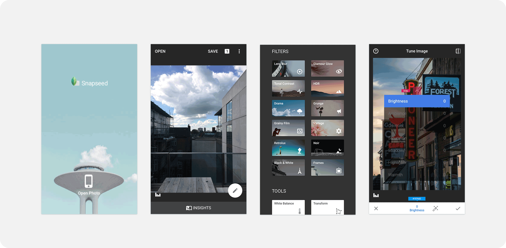
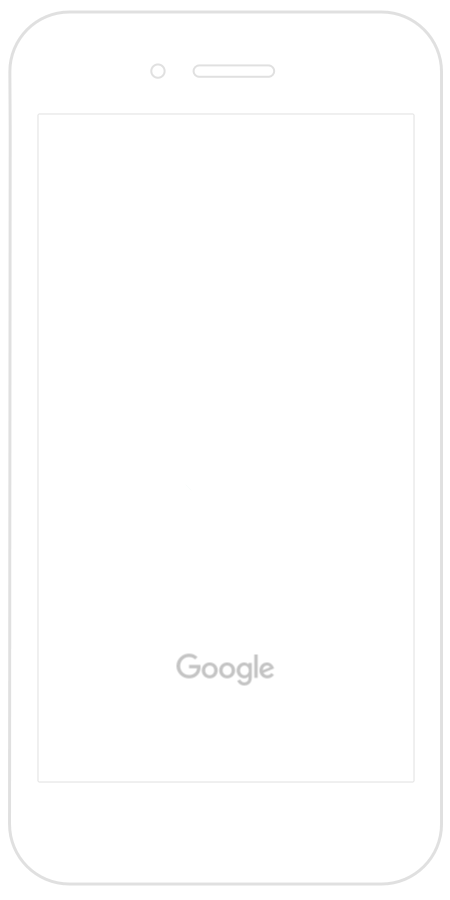
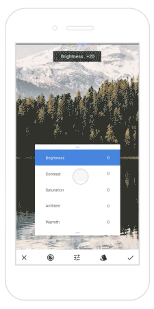
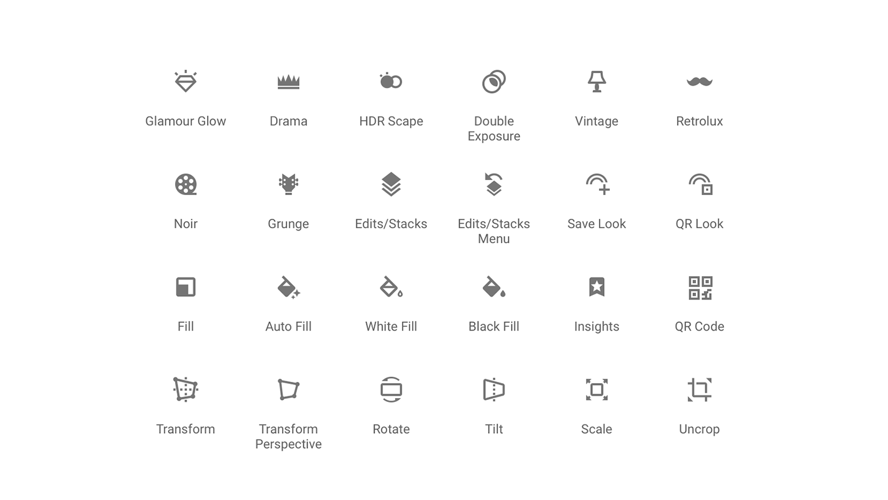

Started with the goal of bringing the best photo editing features from large screens into an outstanding mobile experience. It provides progressed and extended editing tools and filters, used by photo enthusiastic users.
Application Features
Snapseed users can edit pictures using swiping gestures to select different effects and enhancements. Alternatively, users can opt for an "automatic" adjustment of color and contrast. Snapseed can save user's editing history and redirect to any of the actions before. It can also create and save filter combinations by using the default filters and editing features.
Before the re-design

My Role
When I joined the team, a re-design was in the near future plan. The plan was to create a new fresh UI that will be:
user friendly to new users and the same time keep the existing user base that consist of more progressed users (photographer and such)
enhance the brand
align with Google Material Design
improve the discovery of the tools and filters
improve the parameter selector discovery and usage
As a new edition to the team I suggested to begin with a more welcoming approach, as first impression is very important. I replaced the static launch screen with an animated logo. I created the animation in after effects for iOS and android animator for android and exported the different codes to both iOS and Android teams.
Launch screen
As a new edition to the team I suggested to begin with a more welcoming approach, as first impression is very important. I replaced the static launch screen with an animated logo. I created the animation in after effects for iOS and android animator for android and exported the different codes to both iOS and Android teams.


Parameter selector testing
I prototyped a more intuitive, discoverable parameter selector, a key Snapseed editing tool. Users often tried to tap it instead of swiping, or failed to discover it entirely. The solution introduced tap interaction, an edit button in the toolbar, and subtle arrows to indicate swipe functionality.
I redesigned existing filter icons and created new icons for filters and tools, following Material Design guidelines throughout.

Snapseed’s Double Exposure filter, designed in close collaboration with engineers to make blending two images intuitive and easy to control.